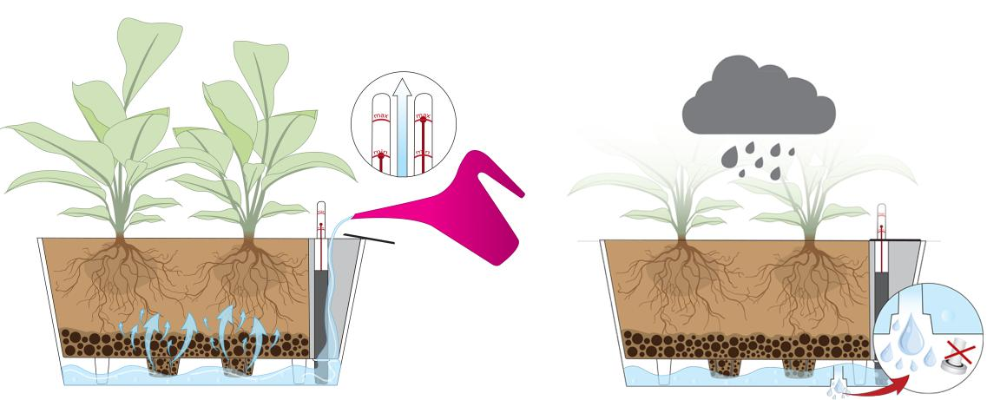
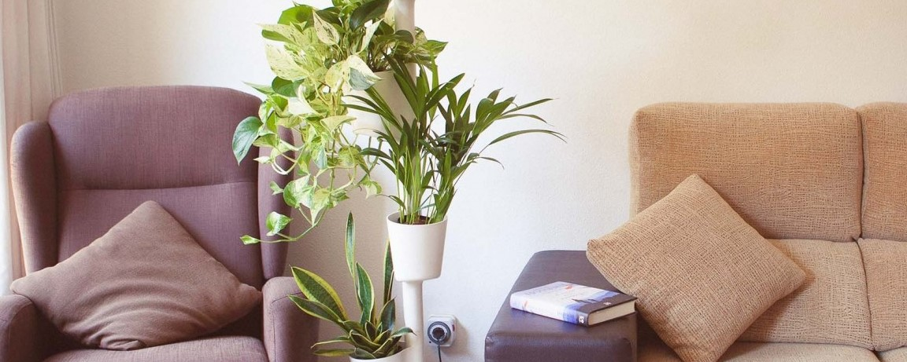
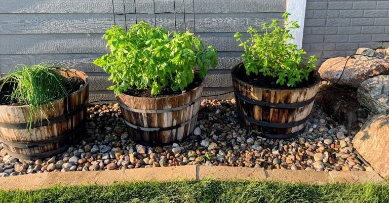
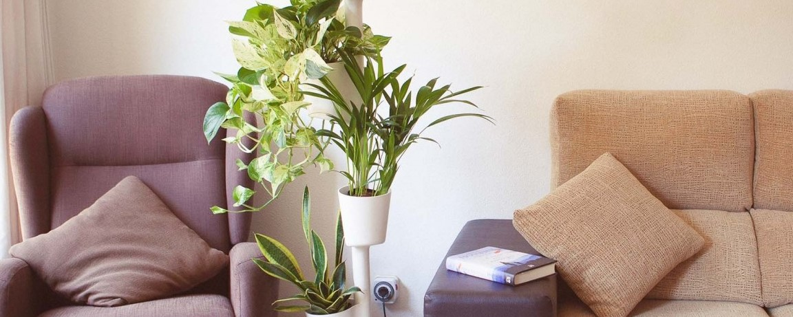
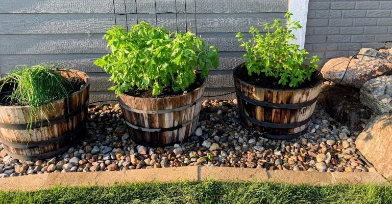

News



Principle of operation of self-watering vases
The Hidrosense H2O system is designed to water plants in a way that makes it easier for the end user to care for plants. More ...

How and when to water your plants during summer
That is the eternal question and what worries us most when the heat arrives. Today we bring you some very easy tricks for watering plants in summer and on vacation. More ...

Setting Up an Automatic Watering System for Outdoor Plants & Hanging Baskets
Setting up an automatic watering system for outdoor plants and hanging baskets using drip irrigation is easier than you might think. More ...